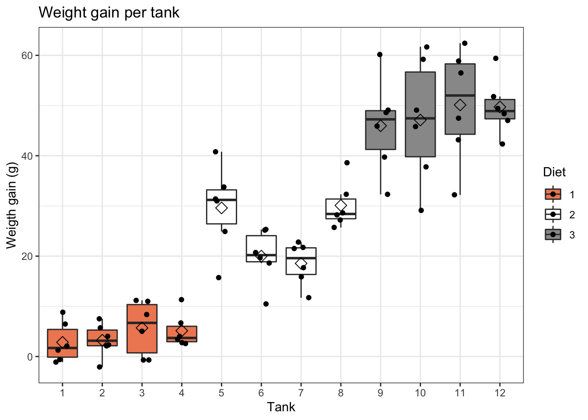
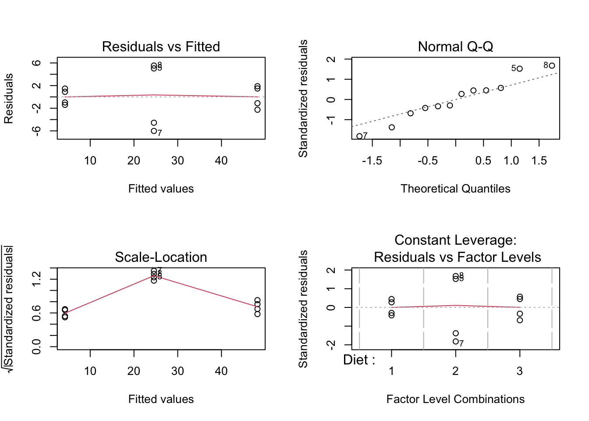

Background
Researchers want to assess the effect of three different diets on the weight gain of fish. They have set up an experiment with 12 different tanks of fish. Each tank contains the same number of fish. The weight of 6 fish in each tank was measured at the beginning and the end of the experiment. The researchers recorded the weight gain.
Data exploration
fish %>%
ggplot(aes(x = Tank, y = WtGain, fill=Diet)) +
geom_boxplot(outlier.shape=NA) +
geom_jitter(width = 0.2) +
ggtitle("Weight gain per tank") +
ylab("Weigth gain (g)") +
stat_summary(fun = mean, geom="point", shape=5, size=3, color="black", fill="black") +
scale_fill_brewer(palette="RdGy") +
theme_bw()

Analysis
Pseudoreplication
Given the experimental design, we may consider the fish kept in the same tank as pseudoreplicates. Intuitively, we can imagine fish the fish that are kept in the same tank may have a more similar response to the diet treatment than fish kept in different tanks. In other words, while having multiple fish in each tank inflates the number of replicates in the dataset, these replicates are not statistically independent. If we do not account for this in pseudoreplication our (regression) analysis and consider all fish as true replicates, the standard error on the estimate for the diet effect will be artificially low, resulting in overly liberal inference.
To account for pseudoreplication in the data, we can average over the pseudoreplicates because we assess the same number fish in each tank. Hence the tank averages will have an equal precision.
Note that prior to averaging, the experimental unit was the tank, while the observational unit was the fish inside the tank. After averaging, the tank will be both the experiental and the observational unit of the experiment.
Averaging can be achieved with the group_by and summarise functions of the dplyr R package.
fish <- fish %>%
group_by(Tank, Diet) %>%
summarise(aveWtGain = mean(WtGain))
## `summarise()` has grouped output by 'Tank'. You can override using the `.groups` argument.
Now, the weight gain values are averaged over de six fish in each of the tanks.
Model assumptions
List assumptions:
- The observations are independent of each other
- Linearity between the response and predictor variable
- The residues of the model must be normally distributed
- Homoscedasticity of the data
After averaging the weight gain values over de six fish in each of the tanks, the first assumption is met. Indeed, we do not expect any pair of tanks (within one diet treatment) to be more similar than another pair of tanks.
To assess the remaining assumptions, we first fit a linear regression model.
lmDiet <- lm(aveWtGain ~ Diet, fish)
par(mfrow=c(2,2))
plot(lmDiet)

We see some undesirable patterns in the diagnostic plots of the linear model.
While the smoother for assessing linearity in the data is flat and centered around zero, there is a much larger spread around the smoother for the observations (tanks) of the second diet type (tanks 5-8). These tanks are also flagged in the QQ-plot, with all tanks appearing in the heavy tails of the plot. Finally, the same tanks seam to introduce heteroscedasticity in the data, as displayed in the third diagnostic plot.
One potential solution is to perform a log-transformation on the data; however, violation of the assumptions was still present upon such transformation (not shown).
For demonstrational purposes, we will continue the analysis, but keep in mind that the assumptions of the model are violated! We will come back to this in the conclusion section.
Overall effect of diet
Hypotheses
The null hypothesis of ANOVA states that: \(H0\): The mean of the average weight gain is equal between the different diet treatments.
The alternative hypothesis of ANOVA states that: \(HA\): The mean of the average weight gain is different for at least one diet treatment from the mean of the average weight gain in at least one other diet treatment.
Test (ANOVA)
lmDiet <- lm(aveWtGain ~ Diet, fish)
library(car)
anova_diet <- Anova(lmDiet, type=3)
anova_diet
The p-value of the ANOVA analysis is extremely significant (p-value = 2.059e-07), so we reject the null hypothesis that the mean of the average weight gain is equal between the different diet treatments. We can say that the average weight gain is significantly different between at least two diet treatments types on the 5% significance level.
Based on this analysis, we do not yet know between which particular diet treatments there is a significant difference. To study this, we will perform the Tuckey post-hoc analysis.
Post-hoc analysis
library(multcomp)
multComp <- glht(model = lmDiet,
linfct = mcp(Diet = "Tukey"))
sumDiet <- summary(multComp)
sumDiet
##
## Simultaneous Tests for General Linear Hypotheses
##
## Multiple Comparisons of Means: Tukey Contrasts
##
##
## Fit: lm(formula = aveWtGain ~ Diet, data = fish)
##
## Linear Hypotheses:
## Estimate Std. Error t value Pr(>|t|)
## 2 - 1 == 0 20.333 2.698 7.536 <1e-04 ***
## 3 - 1 == 0 44.000 2.698 16.308 <1e-04 ***
## 3 - 2 == 0 23.667 2.698 8.772 <1e-04 ***
## ---
## Signif. codes: 0 '***' 0.001 '**' 0.01 '*' 0.05 '.' 0.1 ' ' 1
## (Adjusted p values reported -- single-step method)
confDiet <- confint(multComp)
confDiet$confint[1,2]
## [1] 12.80746
Conclusion
The mean average weight gain is significantly different between all the different diet treatments. The effect sizes and significance levels are as follows:
Higher weight gain in diet 2 than in diet 1 (mean difference = 20.33, adjusted p-value = 5.841e-05, 95% CI [12.81, 27.86])
Higher weight gain in diet 3 than in diet 1 (mean difference = 44, adjusted p-value = 3.246e-13, 95% CI [36.47, 51.53])
Higher weight gain in diet 3 than in diet 2 (mean difference = 23.67, adjusted p-value = 6.076e-06, 95% CI [16.14, 31.19])
Note, however, that the assumptions of test are violated, i.e. larger variability in Diet 2 and/or additional tank/batch effects in Diet 2. The tanks seem to cluster per two tanks, which may suggest a hidden level of dependence between the tanks of this second diet treatment level. We therefore have to be very careful with the interpretation of the results.
LS0tCnRpdGxlOiAiRXhlcmNpc2UgOC54OiBCbG9ja2luZyBvbiB0aGUgZmlzaCB0YW5rIGRhdGFzZXQgLSBzb2x1dGlvbiIgICAKYXV0aG9yOiAiTGlldmVuIENsZW1lbnQgYW5kIEplcm9lbiBHaWxpcyIKZGF0ZTogInN0YXRPbWljcywgR2hlbnQgVW5pdmVyc2l0eSAoaHR0cHM6Ly9zdGF0b21pY3MuZ2l0aHViLmlvKSIgIApvdXRwdXQ6CiAgICBodG1sX2RvY3VtZW50OgogICAgICBjb2RlX2Rvd25sb2FkOiB0cnVlICAgIAogICAgICB0aGVtZTogY29zbW8KICAgICAgdG9jOiB0cnVlCiAgICAgIHRvY19mbG9hdDogdHJ1ZQogICAgICBoaWdobGlnaHQ6IHRhbmdvCiAgICAgIG51bWJlcl9zZWN0aW9uczogdHJ1ZQotLS0KCiMgQmFja2dyb3VuZCAKClJlc2VhcmNoZXJzIHdhbnQgdG8gYXNzZXNzIHRoZSBlZmZlY3Qgb2YgdGhyZWUgZGlmZmVyZW50IGRpZXRzIG9uIHRoZSB3ZWlnaHQgCmdhaW4gb2YgZmlzaC4gVGhleSBoYXZlIHNldCB1cCBhbiBleHBlcmltZW50IHdpdGggMTIgZGlmZmVyZW50IHRhbmtzIG9mIGZpc2guIApFYWNoIHRhbmsgY29udGFpbnMgdGhlIHNhbWUgbnVtYmVyIG9mIGZpc2guIFRoZSB3ZWlnaHQgb2YgNiBmaXNoIGluIGVhY2ggdGFuayAKd2FzIG1lYXN1cmVkIGF0IHRoZSBiZWdpbm5pbmcgYW5kIHRoZSBlbmQgb2YgdGhlIGV4cGVyaW1lbnQuIFRoZSByZXNlYXJjaGVycyAKcmVjb3JkZWQgdGhlIHdlaWdodCBnYWluLgoKIyBFeHBlcmltZW50YWwgZGVzaWduCgotIFRoZSBleHBsYW5hdG9yeSB2YXJpYWJsZSBpbiB0aGUgZXhwZXJpbWVudCBpcyB0aGUgZmFjdG9yIHR5cGUgb2YgZGlldAoKLSBUaGVyZSBhcmUgMyBkaWV0IHR5cGVzOiBkaWV0IDEsIGRpZXQgMiwgYW5kIGRpZXQgMy4KCi0gVGhlIGV4cGVyaW1lbnRhbCB1bml0IGlzIHRoZSB0YW5rOiB0aGUgZGlldCB0cmVhdG1lbnRzIGFyZSBhZG9wdGVkIG9uIHRoZSAKdGFua3MsIGkuZS4sIHRoZSB0YW5rcyBhcmUgcmFuZG9taXplZCB0byB0aGUgZGlldCB0cmVhdG1lbnRzLgoKLSBUaGUgd2VpZ2h0IGdhaW4gaXMgdGhlIHJlc3BvbnNlIGFuZCBpdCBpcyBtZWFzdXJlZCBvbiBlYWNoIGZpc2ggd2hpY2ggYXJlIAp0aGUgb2JzZXJ2YXRpb25hbCB1bml0cy4KCkltcG9ydCBsaWJyYXJpZXMKCmBgYHtyLCBtZXNzYWdlPUZBTFNFLCB3YXJuaW5nPUZBTFNFfQpsaWJyYXJ5KHRpZHl2ZXJzZSkKYGBgCgojIERhdGEgaW1wb3J0CgpgYGB7cn0KZmlzaCA8LSByZWFkLnRhYmxlKCJodHRwczovL3Jhdy5naXRodWJ1c2VyY29udGVudC5jb20vc3RhdE9taWNzL1BTTFMyMS9kYXRhL2Zpc2hUYW5rLnR4dCIsaGVhZGVyPVRSVUUpCmhlYWQoZmlzaCkKYGBgCgojIFRpZHkgZGF0YQoKYGBge3J9CmZpc2ggPC0gZmlzaCAlPiUKICAgIG11dGF0ZShUYW5rID0gYXMuZmFjdG9yKFRhbmspLCBEaWV0ID0gYXMuZmFjdG9yKERpZXQpKQpgYGAKCiMgRGF0YSBleHBsb3JhdGlvbgoKYGBge3J9CmZpc2ggJT4lCiAgZ2dwbG90KGFlcyh4ID0gVGFuaywgeSA9IFd0R2FpbiwgZmlsbD1EaWV0KSkgKwogICAgZ2VvbV9ib3hwbG90KG91dGxpZXIuc2hhcGU9TkEpICsgCiAgICBnZW9tX2ppdHRlcih3aWR0aCA9IDAuMikgKwogICAgZ2d0aXRsZSgiV2VpZ2h0IGdhaW4gcGVyIHRhbmsiKSArCiAgICB5bGFiKCJXZWlndGggZ2FpbiAoZykiKSArIAogICAgc3RhdF9zdW1tYXJ5KGZ1biA9IG1lYW4sIGdlb209InBvaW50Iiwgc2hhcGU9NSwgc2l6ZT0zLCBjb2xvcj0iYmxhY2siLCBmaWxsPSJibGFjayIpICsKICAgIHNjYWxlX2ZpbGxfYnJld2VyKHBhbGV0dGU9IlJkR3kiKSArCiAgICB0aGVtZV9idygpCmBgYAoKIyBBbmFseXNpcwoKIyMgUHNldWRvcmVwbGljYXRpb24KCkdpdmVuIHRoZSBleHBlcmltZW50YWwgZGVzaWduLCB3ZSBtYXkgY29uc2lkZXIgdGhlIGZpc2gga2VwdCBpbiB0aGUgc2FtZSB0YW5rCmFzICoqcHNldWRvcmVwbGljYXRlcyoqLiBJbnR1aXRpdmVseSwgd2UgY2FuIGltYWdpbmUgZmlzaCB0aGUgZmlzaCB0aGF0IGFyZSBrZXB0CmluIHRoZSBzYW1lIHRhbmsgbWF5IGhhdmUgYSBtb3JlIHNpbWlsYXIgcmVzcG9uc2UgdG8gdGhlIGRpZXQgdHJlYXRtZW50IHRoYW4KZmlzaCBrZXB0IGluIGRpZmZlcmVudCB0YW5rcy4gSW4gb3RoZXIgd29yZHMsIHdoaWxlIGhhdmluZyBtdWx0aXBsZSBmaXNoIGluIGVhY2gKdGFuayBpbmZsYXRlcyB0aGUgbnVtYmVyIG9mIHJlcGxpY2F0ZXMgaW4gdGhlIGRhdGFzZXQsIHRoZXNlIHJlcGxpY2F0ZXMgYXJlIG5vdCAKc3RhdGlzdGljYWxseSBpbmRlcGVuZGVudC4gSWYgd2UgZG8gbm90IGFjY291bnQgZm9yIHRoaXMgaW4gCioqcHNldWRvcmVwbGljYXRpb24qKiBvdXIgKHJlZ3Jlc3Npb24pIGFuYWx5c2lzIGFuZCBjb25zaWRlciBhbGwgZmlzaCBhcyB0cnVlIApyZXBsaWNhdGVzLCB0aGUgc3RhbmRhcmQgZXJyb3Igb24gdGhlIGVzdGltYXRlIGZvciB0aGUgZGlldCBlZmZlY3Qgd2lsbCBiZSAKYXJ0aWZpY2lhbGx5IGxvdywgcmVzdWx0aW5nIGluIG92ZXJseSBsaWJlcmFsIGluZmVyZW5jZS4KClRvIGFjY291bnQgZm9yIHBzZXVkb3JlcGxpY2F0aW9uIGluIHRoZSBkYXRhLCB3ZSBjYW4gYXZlcmFnZSBvdmVyIAp0aGUgcHNldWRvcmVwbGljYXRlcyBiZWNhdXNlIHdlIGFzc2VzcyB0aGUgc2FtZSBudW1iZXIgZmlzaCBpbiBlYWNoIHRhbmsuIApIZW5jZSB0aGUgdGFuayBhdmVyYWdlcyB3aWxsIGhhdmUgYW4gZXF1YWwgcHJlY2lzaW9uLiAKCk5vdGUgdGhhdCBwcmlvciB0byBhdmVyYWdpbmcsIHRoZSBleHBlcmltZW50YWwgdW5pdCB3YXMgdGhlIHRhbmssIHdoaWxlIHRoZQpvYnNlcnZhdGlvbmFsIHVuaXQgd2FzIHRoZSBmaXNoIGluc2lkZSB0aGUgdGFuay4gQWZ0ZXIgYXZlcmFnaW5nLCB0aGUgdGFuawp3aWxsIGJlIGJvdGggdGhlIGV4cGVyaWVudGFsIGFuZCB0aGUgb2JzZXJ2YXRpb25hbCB1bml0IG9mIHRoZSBleHBlcmltZW50LgogCkF2ZXJhZ2luZyBjYW4gYmUgYWNoaWV2ZWQgd2l0aCB0aGUgYGdyb3VwX2J5YCBhbmQgYHN1bW1hcmlzZWAgZnVuY3Rpb25zIG9mIAp0aGUgYGRwbHlyYCBSIHBhY2thZ2UuCgpgYGB7cn0KZmlzaCA8LSBmaXNoICU+JSAKICAgIGdyb3VwX2J5KFRhbmssIERpZXQpICU+JQogICAgc3VtbWFyaXNlKGF2ZVd0R2FpbiA9IG1lYW4oV3RHYWluKSkKZmlzaApgYGAKCk5vdywgdGhlIHdlaWdodCBnYWluIHZhbHVlcyBhcmUgYXZlcmFnZWQgb3ZlciBkZSBzaXggZmlzaCBpbiBlYWNoIG9mIHRoZSB0YW5rcy4KCiMjIE1vZGVsIGFzc3VtcHRpb25zCgpMaXN0IGFzc3VtcHRpb25zOgoKMS4gVGhlIG9ic2VydmF0aW9ucyBhcmUgaW5kZXBlbmRlbnQgb2YgZWFjaCBvdGhlcgoyLiBMaW5lYXJpdHkgYmV0d2VlbiB0aGUgcmVzcG9uc2UgYW5kIHByZWRpY3RvciB2YXJpYWJsZQozLiBUaGUgcmVzaWR1ZXMgb2YgdGhlIG1vZGVsIG11c3QgYmUgbm9ybWFsbHkgZGlzdHJpYnV0ZWQKNC4gSG9tb3NjZWRhc3RpY2l0eSBvZiB0aGUgZGF0YQoKQWZ0ZXIgYXZlcmFnaW5nIHRoZSB3ZWlnaHQgZ2FpbiB2YWx1ZXMgb3ZlciBkZSBzaXggZmlzaCBpbiBlYWNoIG9mIHRoZSB0YW5rcywKdGhlIGZpcnN0IGFzc3VtcHRpb24gaXMgbWV0LiBJbmRlZWQsIHdlIGRvIG5vdCBleHBlY3QgYW55IHBhaXIgb2YgdGFua3MgKHdpdGhpbgpvbmUgZGlldCB0cmVhdG1lbnQpIHRvIGJlIG1vcmUgc2ltaWxhciB0aGFuIGFub3RoZXIgcGFpciBvZiB0YW5rcy4KClRvIGFzc2VzcyB0aGUgcmVtYWluaW5nIGFzc3VtcHRpb25zLCB3ZSBmaXJzdCBmaXQgYSBsaW5lYXIgcmVncmVzc2lvbiBtb2RlbC4KCmBgYHtyfQpsbURpZXQgPC0gbG0oYXZlV3RHYWluIH4gRGlldCwgZmlzaCkKCnBhcihtZnJvdz1jKDIsMikpCnBsb3QobG1EaWV0KQpgYGAKCldlIHNlZSBzb21lIHVuZGVzaXJhYmxlIHBhdHRlcm5zIGluIHRoZSBkaWFnbm9zdGljIHBsb3RzIG9mIHRoZSBsaW5lYXIgbW9kZWwuCgpXaGlsZSB0aGUgc21vb3RoZXIgZm9yIGFzc2Vzc2luZyBsaW5lYXJpdHkgaW4gdGhlIGRhdGEgaXMgZmxhdCBhbmQgY2VudGVyZWQKYXJvdW5kIHplcm8sIHRoZXJlIGlzIGEgbXVjaCBsYXJnZXIgc3ByZWFkIGFyb3VuZCB0aGUgc21vb3RoZXIgZm9yIHRoZSAKb2JzZXJ2YXRpb25zICh0YW5rcykgb2YgdGhlIHNlY29uZCBkaWV0IHR5cGUgKHRhbmtzIDUtOCkuIFRoZXNlIHRhbmtzIGFyZQphbHNvIGZsYWdnZWQgaW4gdGhlIFFRLXBsb3QsIHdpdGggYWxsIHRhbmtzIGFwcGVhcmluZyBpbiB0aGUgaGVhdnkgdGFpbHMgb2YgdGhlIApwbG90LiBGaW5hbGx5LCB0aGUgc2FtZSB0YW5rcyBzZWFtIHRvIGludHJvZHVjZSBoZXRlcm9zY2VkYXN0aWNpdHkgaW4gdGhlIGRhdGEsCmFzIGRpc3BsYXllZCBpbiB0aGUgdGhpcmQgZGlhZ25vc3RpYyBwbG90LgoKT25lIHBvdGVudGlhbCBzb2x1dGlvbiBpcyB0byBwZXJmb3JtIGEgbG9nLXRyYW5zZm9ybWF0aW9uIG9uIHRoZSBkYXRhOyBob3dldmVyLAp2aW9sYXRpb24gb2YgdGhlIGFzc3VtcHRpb25zIHdhcyBzdGlsbCBwcmVzZW50IHVwb24gc3VjaCB0cmFuc2Zvcm1hdGlvbiAobm90CnNob3duKS4KCioqRm9yIGRlbW9uc3RyYXRpb25hbCBwdXJwb3Nlcywgd2Ugd2lsbCBjb250aW51ZSB0aGUgYW5hbHlzaXMsIGJ1dCBrZWVwIGluKioKKiptaW5kIHRoYXQgdGhlIGFzc3VtcHRpb25zIG9mIHRoZSBtb2RlbCBhcmUgdmlvbGF0ZWQhIFdlIHdpbGwgY29tZSBiYWNrIHRvKioKKip0aGlzIGluIHRoZSBgY29uY2x1c2lvbmAgc2VjdGlvbi4qKgoKIyMgT3ZlcmFsbCBlZmZlY3Qgb2YgZGlldAoKIyMjIEh5cG90aGVzZXMKClRoZSBudWxsIGh5cG90aGVzaXMgb2YgQU5PVkEgc3RhdGVzIHRoYXQ6CiRIMCQ6IFRoZSBtZWFuIG9mIHRoZSBhdmVyYWdlIHdlaWdodCBnYWluIGlzIGVxdWFsIGJldHdlZW4gdGhlIGRpZmZlcmVudCBkaWV0IAp0cmVhdG1lbnRzLgoKVGhlIGFsdGVybmF0aXZlIGh5cG90aGVzaXMgb2YgQU5PVkEgc3RhdGVzIHRoYXQ6CiRIQSQ6IFRoZSBtZWFuIG9mIHRoZSBhdmVyYWdlIHdlaWdodCBnYWluIGlzIGRpZmZlcmVudCBmb3IgYXQgbGVhc3Qgb25lIGRpZXQgCnRyZWF0bWVudCBmcm9tIHRoZSBtZWFuIG9mIHRoZSBhdmVyYWdlIHdlaWdodCBnYWluIGluIGF0IGxlYXN0IG9uZSBvdGhlciBkaWV0IAp0cmVhdG1lbnQuCgojIyMgVGVzdCAoQU5PVkEpCgpgYGB7ciwgbWVzc2FnZT1GQUxTRSwgd2FybmluZz1GQUxTRX0KbG1EaWV0IDwtIGxtKGF2ZVd0R2FpbiB+IERpZXQsIGZpc2gpCgpsaWJyYXJ5KGNhcikKYW5vdmFfZGlldCA8LSBBbm92YShsbURpZXQsIHR5cGU9MykKYW5vdmFfZGlldApgYGAKClRoZSBwLXZhbHVlIG9mIHRoZSBBTk9WQSBhbmFseXNpcyBpcyBleHRyZW1lbHkgc2lnbmlmaWNhbnQKKHAtdmFsdWUgPSBgciBmb3JtYXQoYW5vdmFfZGlldFtbNF1dWzJdLGRpZ2l0cz00KWApLCAKc28gd2UgcmVqZWN0IHRoZSBudWxsIGh5cG90aGVzaXMgdGhhdCB0aGUgbWVhbiBvZiB0aGUgYXZlcmFnZSB3ZWlnaHQgZ2FpbiBpcyAKZXF1YWwgYmV0d2VlbiB0aGUgZGlmZmVyZW50IGRpZXQgdHJlYXRtZW50cy4gV2UgY2FuIHNheSB0aGF0IHRoZSBhdmVyYWdlIHdlaWdodApnYWluIGlzIHNpZ25pZmljYW50bHkgZGlmZmVyZW50IGJldHdlZW4gYXQgbGVhc3QgdHdvIGRpZXQgdHJlYXRtZW50cyB0eXBlcyBvbiAKdGhlIDUlIHNpZ25pZmljYW5jZSBsZXZlbC4KCkJhc2VkIG9uIHRoaXMgYW5hbHlzaXMsIHdlIGRvIG5vdCB5ZXQga25vdyBiZXR3ZWVuIHdoaWNoIHBhcnRpY3VsYXIKZGlldCB0cmVhdG1lbnRzIHRoZXJlIGlzIGEgc2lnbmlmaWNhbnQgZGlmZmVyZW5jZS4gVG8gc3R1ZHkgdGhpcywgd2Ugd2lsbApwZXJmb3JtIHRoZSBUdWNrZXkgcG9zdC1ob2MgYW5hbHlzaXMuCgojIyBQb3N0LWhvYyBhbmFseXNpcwoKYGBge3IsIG1lc3NhZ2U9RkFMU0UsIHdhcm5pbmc9RkFMU0V9CmxpYnJhcnkobXVsdGNvbXApCm11bHRDb21wIDwtIGdsaHQobW9kZWwgPSBsbURpZXQsIAogICAgICAgICAgICAgICAgIGxpbmZjdCA9IG1jcChEaWV0ID0gIlR1a2V5IikpCnN1bURpZXQgPC0gc3VtbWFyeShtdWx0Q29tcCkKc3VtRGlldApgYGAKCmBgYHtyfQpjb25mRGlldCA8LSBjb25maW50KG11bHRDb21wKQpjb25mRGlldCRjb25maW50WzEsMl0KYGBgCgojIyBDb25jbHVzaW9uCgpUaGUgbWVhbiBhdmVyYWdlIHdlaWdodCBnYWluIGlzIHNpZ25pZmljYW50bHkgZGlmZmVyZW50IGJldHdlZW4gYWxsIHRoZSAKZGlmZmVyZW50IGRpZXQgdHJlYXRtZW50cy4gVGhlIGVmZmVjdCBzaXplcyBhbmQgc2lnbmlmaWNhbmNlIGxldmVscyBhcmUgYXMKZm9sbG93czoKCi0gSGlnaGVyIHdlaWdodCBnYWluIGluIGRpZXQgMiB0aGFuIGluIGRpZXQgMSAobWVhbiBkaWZmZXJlbmNlID0gCmByIGZvcm1hdChzdW1EaWV0JHRlc3QkY29lZmZpY2llbnRzWzFdLGRpZ2l0cz00KWAsIGFkanVzdGVkIHAtdmFsdWUgPSAKYHIgZm9ybWF0KHN1bURpZXQkdGVzdCRwdmFsdWVzWzFdLGRpZ2l0cz00KWAsIDk1JSBDSQpbYHIgZm9ybWF0KGNvbmZEaWV0JGNvbmZpbnRbMSwyXSxkaWdpdHM9NClgLCAKYHIgZm9ybWF0KGNvbmZEaWV0JGNvbmZpbnRbMSwzXSxkaWdpdHM9NClgXSkKCi0gSGlnaGVyIHdlaWdodCBnYWluIGluIGRpZXQgMyB0aGFuIGluIGRpZXQgMSAobWVhbiBkaWZmZXJlbmNlID0gCmByIGZvcm1hdChzdW1EaWV0JHRlc3QkY29lZmZpY2llbnRzWzJdLGRpZ2l0cz00KWAsIGFkanVzdGVkIHAtdmFsdWUgPSAKYHIgZm9ybWF0KHN1bURpZXQkdGVzdCRwdmFsdWVzWzJdLGRpZ2l0cz00KWAsIDk1JSBDSQpbYHIgZm9ybWF0KGNvbmZEaWV0JGNvbmZpbnRbMiwyXSxkaWdpdHM9NClgLCAKYHIgZm9ybWF0KGNvbmZEaWV0JGNvbmZpbnRbMiwzXSxkaWdpdHM9NClgXSkKCi0gSGlnaGVyIHdlaWdodCBnYWluIGluIGRpZXQgMyB0aGFuIGluIGRpZXQgMiAobWVhbiBkaWZmZXJlbmNlID0gCmByIGZvcm1hdChzdW1EaWV0JHRlc3QkY29lZmZpY2llbnRzWzNdLGRpZ2l0cz00KWAsIGFkanVzdGVkIHAtdmFsdWUgPSAKYHIgZm9ybWF0KHN1bURpZXQkdGVzdCRwdmFsdWVzWzNdLGRpZ2l0cz00KWAsIDk1JSBDSQpbYHIgZm9ybWF0KGNvbmZEaWV0JGNvbmZpbnRbMywyXSxkaWdpdHM9NClgLCAKYHIgZm9ybWF0KGNvbmZEaWV0JGNvbmZpbnRbMywzXSxkaWdpdHM9NClgXSkKCioqTm90ZSwgaG93ZXZlciwgdGhhdCB0aGUgYXNzdW1wdGlvbnMgb2YgdGVzdCBhcmUgdmlvbGF0ZWQsKiogaS5lLiBsYXJnZXIgCnZhcmlhYmlsaXR5IGluIERpZXQgMiBhbmQvb3IgYWRkaXRpb25hbCB0YW5rL2JhdGNoIGVmZmVjdHMgaW4gRGlldCAyLiBUaGUgdGFua3MgCnNlZW0gdG8gY2x1c3RlciBwZXIgdHdvIHRhbmtzLCB3aGljaCBtYXkgc3VnZ2VzdCBhIGhpZGRlbiBsZXZlbCBvZiBkZXBlbmRlbmNlIApiZXR3ZWVuIHRoZSB0YW5rcyBvZiB0aGlzIHNlY29uZCBkaWV0IHRyZWF0bWVudCBsZXZlbC4gCioqV2UgdGhlcmVmb3JlIGhhdmUgdG8gYmUgdmVyeSBjYXJlZnVsIHdpdGggdGhlIGludGVycHJldGF0aW9uIG9mIHRoZSByZXN1bHRzLioqCgoKCg==